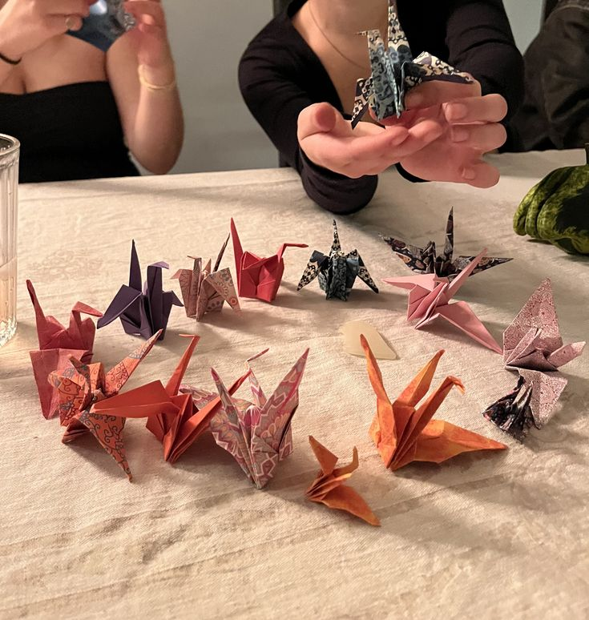

Bienvenido a mi página de pasatiempos. Aquí te cuento un poco de las cosas que más me gusta hacer en mi tiempo libre para desconectarme de las clases y del trabajo.
La música me acompaña todo el día, ya sea para estudiar, trabajar o simplemente relajarme. Me encanta escuchar a BTS y disfrutar de un buen playlist con de todo un poco.
Me fascina maratonear series e historias chéveres. Entre mis favoritas están My Hero Academia, BoJack Horseman y JoJo's Bizarre Adventure. Siempre hay tiempo para ver un buen capítulo o una peli entretenida.
Jugar un rato en la compu o en la consola es el plan perfecto para distraerme y pasar el rato. Es la mejor forma de despejar la mente después de un día pesado.
Me gusta mucho la creatividad y hacer cosas con las manos. Doblar papel y armar figuras de origami me entretiene bastante y me ayuda a concentrarme y relajarme.

Disfruto tomarme un tiempo a solas para leer historias o temas que me llamen la atención. Un buen libro con un cafecito al lado es un planazo.
Me encanta el buen humor y matarme de la risa viendo rutinas de comedia y stand up. Es lo mejor para cambiar de ambiente y sacarse el estrés de encima.
| Nombre | Tiempo | Recomiendo? | Tipo pasatiempo | Como me concidero? |
|---|---|---|---|---|
| Escuchar música | desde que tengo memoria | si, mucho | sola y acompañada | es libre |
| Ver películas y series | 2020 | si | sola y acomapañada | me concentro mucho |
| Jugar videojuegos | 2018 | si | acompañada | experta en algunos |
| Hacer origami | 2019 | si, muchisimo | sola | experta en algunas |